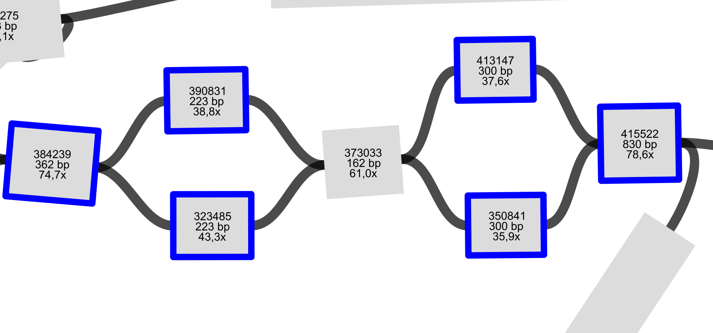

!bedtools intersect -a ../../data/ecoli/ec958_IS.bed -b eris-outputs/chromosome_fasta.bed -v | bedtools getfasta -name -fi ../../data/ecoli/EC958.fasta -bed - > IS_eris_missed.fastaWeek 07: Investigating missed calls and overcalls by eris, and attempting to resolve fragmented IS sequences
Overview
- All IS element that is missed by Eris are truncated (not full) sequences in the complete chromosome. Isescan missed one full IS sequence.
- 2 (IS609 and ISEc52) of 4 eris missed IS elements have 600-800 bp long, hit to IS sequencen ISfinder with high identity and 0 E value.
- MITEEc1, IS1397, IS100kyp, ISKox3, ISEch14, ISEc10, IS21 are likely to be true exist in the EC958 complete chromosome sequence.
- Eris (and isescan) overcounted the number of IS in the genome asssembly result, because they counted a fragmented IS sequence separtely.
- Fragmented IS also appear when I used
masonto simulte the reads. - By graph traversal logic, fragmented IS sequnces (nodes in the graph) can be collapsed and the IS copies can be quantified by their contig depths relative to the median depth
FragGeneScanRsdetected more ORFs thanPyrodgial. It is more sensitive than Pyrodgial, but has lower precision score.
Daily Log
08-09-2025
- Weekly project meeting
- Dimas will inspect more IS that eris missed, as well as the extra IS
- Workaround to get IS name from isescan is to extract the sequence using genomic coordimnate and blast it to the ISfinder
- Need resolve fragmented IS elements that eris (also isescan) detects seperately, for instance:
- Using graph logic for traversing the graph until we don’t get the mobile_element (consider the adjacent and also orientation)
- block mapping
09-09-2025
Extract IS that eris missed and inspect them manually
ISfinder blast result from those four Eris missed IS elements can be accessed here
- HG941718.1 2103782 2104446 : truncated at both ends IS609 (origin: Escherichia coli, length: 664 bp) is real, hit on the BLAST with E value 0.0. True IS609.
- HG941718.1 3312816 3313143 truncated by IS30 has two equal E value and score bits on BLAST ISSfl10 and IS600. It has 327 of 1237 total element length. Too short? is this still functional?
- HG941718.1 4922924 4923251 truncated at right end of IS hits to ISLad1 (327 of 1249 bp length), score = 430 bits
- HG941718.1 4943650 4944441 truncated at left end by IS600 95% is real, identified as ISEc52 (791 of 1250 bp) on ISfinder, E value 0.
Two of them have E value 0 on BLAST, all truncated.
Extract IS that isescan missed and inspect them manually
!bedtools intersect -a ../../data/ecoli/ec958_IS.bed -b ../../data/ecoli/isescan-outputs/EC958.fasta.bed -v | bedtools getfasta -name -fi ../../data/ecoli/EC958.fasta -bed - > IS_isescan_missed.fastaISfinder blast result can be accessed here
It has different missed IS calls with eris
- HG941718.1 1365600 1366443 hits to ISCfr4 (843 of 1253 bp), Evalue 0
- HG941718.1 3312816 3313143 truncated by IS30 hits to ISSfl10 (327 of 1237 bp)
- HG941718.1 3313143 3314364 insertion sequence:IS30 hits to IS30 and IS30D (1221 of 1221 bp), Evalue 0
- HG941718.1 4976678 4977300 deletion within IS hits to ISSen1 (622 of 1312 bp)
Full IS30 sequence in the chromosome missed to detect
Extract the Eris overcalled IS
!bedtools intersect -a eris-outputs/chromosome_fasta.bed -b ../../data/ecoli/ec958_IS.bed -v | bedtools getfasta -name -fi ../../data/ecoli/EC958.fasta -bed - > eris_overcall_IS.fastaISfinder blast result here
IS elements that seem to be true are:
- HG941718.1 814902 815025 MITEEc1: A novel repetitive element (only 123 bp long) in enterobacteria genomes (100% coverage)
- HG941718.1 1997567 1998999 IS1397: About 100% for coverage and identitiy, and it is also from E coli origin. It has two copies.
- 2252365 2254232 IS100kyp: 99% identity with is found in 1867 bp long
- HG941718.1 3295103 3295881 ISKox3: 59% coverage with 788 bp long, it has E value 0
- HG941718.1 3316099 3317706 ISEch14: 97% coverage,but with 80% identity with ISEch14. E value 0
- HG941718.1 3360526 3362935 ISEc10: 100% coverage 99% identity with ISEch10 on ISfinder
- HG941718.1 4175107 4177238 IS21: 100% coverage and 99% identitiy with IS21, E value 0.
Orther IS identified sequences have low (<50%) coverage and low identity on the ISfinder blast result.
11-09-2025
Tried other read simulator (mason)
mason_simulator -ir ../fastas/EC958.fasta -n 8000000 -o reads_1.fq -or reads_2.fq \
--illumina-read-length 150 --fragment-mean-size 400 --fragment-size-std-dev 50import pandas as pd
!eris scan ../../data/ecoli/assembly-simulated/shovills-mason/contigs.gfa > eris-outputs/mason_shovill_gfa.tsv
eris_mason_gfa = pd.read_csv("eris-outputs/mason_shovill_gfa.tsv", sep="\t")
eris_mason_gfa = eris_mason_gfa[eris_mason_gfa['Type'] == "mobile_element"]
eris_mason_gfa[eris_mason_gfa["Name"] == "ISEc23"]| Genome | Feature | Type | Contig | Start | End | Strand | Partial | Element | Element_distance | ... | Element_effect | Percent_identity | Percent_coverage | Name | Family | Group | Synonyms | Origin | IR | DR | |
|---|---|---|---|---|---|---|---|---|---|---|---|---|---|---|---|---|---|---|---|---|---|
| 17 | contigs | f6cded60-e576-4207-ac55-f8183361a688 | mobile_element | 357289 | 0 | 223 | -1 | True | f6cded60-e576-4207-ac55-f8183361a688 | - | ... | - | 100.0 | 8.807266982622433 | ISEc23 | IS66 | NaN | NaN | Escherichia coli | 20/24 | 8 |
| 34 | contigs | 364c653e-6ff7-4d01-a1e3-f0ff29b5d863 | mobile_element | 395013 | 0 | 440 | 1 | True | 364c653e-6ff7-4d01-a1e3-f0ff29b5d863 | - | ... | - | 100.0 | 17.377567140600316 | ISEc23 | IS66 | NaN | NaN | Escherichia coli | 20/24 | 8 |
| 36 | contigs | e364f7d0-7340-4c60-a42c-d2470ce5a058 | mobile_element | 395695 | 1 | 182 | -1 | True | e364f7d0-7340-4c60-a42c-d2470ce5a058 | - | ... | - | 100.0 | 7.148499210110584 | ISEc23 | IS66 | NaN | NaN | Escherichia coli | 20/24 | 8 |
| 64 | contigs | 80561361-05cc-42e8-9bcb-099c8de68dc8 | mobile_element | 411359 | 0 | 223 | 1 | True | 80561361-05cc-42e8-9bcb-099c8de68dc8 | - | ... | - | 100.0 | 8.807266982622433 | ISEc23 | IS66 | NaN | NaN | Escherichia coli | 20/24 | 8 |
| 73 | contigs | 35ed6380-ace9-469d-9151-09c6090d8bf9 | mobile_element | 412011 | 0 | 223 | 1 | True | 35ed6380-ace9-469d-9151-09c6090d8bf9 | - | ... | - | 99.55156950672645 | 8.807266982622433 | ISEc23 | IS66 | NaN | NaN | Escherichia coli | 20/24 | 8 |
| 81 | contigs | ab838b9c-f0b1-4af7-abf2-0e9697105d60 | mobile_element | 413263 | 0 | 1326 | 1 | True | ab838b9c-f0b1-4af7-abf2-0e9697105d60 | - | ... | - | 100.0 | 52.3696682464455 | ISEc23 | IS66 | NaN | NaN | Escherichia coli | 20/24 | 8 |
| 181 | contigs | 1f136fba-20bd-4bd9-85c2-ec6e8aed4b49 | mobile_element | 421120 | 0 | 694 | 1 | True | 1f136fba-20bd-4bd9-85c2-ec6e8aed4b49 | - | ... | - | 99.85590778097982 | 27.409162717219587 | ISEc23 | IS66 | NaN | NaN | Escherichia coli | 20/24 | 8 |
| 303 | contigs | 67ef60a8-d1cb-4d65-a7f5-6b365ea9a209 | mobile_element | 716183 | 0 | 223 | 1 | True | 67ef60a8-d1cb-4d65-a7f5-6b365ea9a209 | - | ... | - | 99.55156950672645 | 8.807266982622433 | ISEc23 | IS66 | NaN | NaN | Escherichia coli | 20/24 | 8 |
8 rows × 22 columns
eris_mason_gfa[eris_mason_gfa["Name"] == "ISEc12"]| Genome | Feature | Type | Contig | Start | End | Strand | Partial | Element | Element_distance | ... | Element_effect | Percent_identity | Percent_coverage | Name | Family | Group | Synonyms | Origin | IR | DR | |
|---|---|---|---|---|---|---|---|---|---|---|---|---|---|---|---|---|---|---|---|---|---|
| 96 | contigs | 030c8b7a-e75f-4d49-9f11-aa8565dbd66b | mobile_element | 414211 | 2 | 2583 | -1 | False | 030c8b7a-e75f-4d49-9f11-aa8565dbd66b | - | ... | - | 99.96125532739248 | 100.0 | ISEc12 | IS21 | NaN | NaN | Escherichia coli | 20/24 | 5 |
1 rows × 22 columns
eris_mason_gfa[eris_mason_gfa["Name"] == "IS1397"]| Genome | Feature | Type | Contig | Start | End | Strand | Partial | Element | Element_distance | ... | Element_effect | Percent_identity | Percent_coverage | Name | Family | Group | Synonyms | Origin | IR | DR | |
|---|---|---|---|---|---|---|---|---|---|---|---|---|---|---|---|---|---|---|---|---|---|
| 10 | contigs | c62586cf-b6a6-46cf-bbc6-b835507cbc0a | mobile_element | 323485 | 0 | 223 | -1 | True | c62586cf-b6a6-46cf-bbc6-b835507cbc0a | - | ... | - | 99.55156950672645 | 15.572625698324021 | IS1397 | IS3 | IS150 | NaN | Escherichia coli | 20/25 | 4 |
| 15 | contigs | ce4493f4-2e0f-410f-8500-1207c22f3d60 | mobile_element | 350841 | 0 | 300 | -1 | True | ce4493f4-2e0f-410f-8500-1207c22f3d60 | - | ... | - | 99.0 | 20.949720670391063 | IS1397 | IS3 | IS150 | NaN | Escherichia coli | 20/25 | 4 |
| 25 | contigs | 75c86810-0840-46fc-aa5f-a8b243f77be0 | mobile_element | 384239 | 0 | 362 | -1 | True | 75c86810-0840-46fc-aa5f-a8b243f77be0 | - | ... | - | 99.17127071823204 | 25.27932960893855 | IS1397 | IS3 | IS150 | NaN | Escherichia coli | 20/25 | 4 |
| 29 | contigs | cf12390e-f5b8-4276-b0dd-338b2174e53a | mobile_element | 390831 | 0 | 223 | -1 | True | cf12390e-f5b8-4276-b0dd-338b2174e53a | - | ... | - | 100.0 | 15.572625698324021 | IS1397 | IS3 | IS150 | NaN | Escherichia coli | 20/25 | 4 |
| 77 | contigs | 64a2cc97-6811-447d-af9b-c53efcae2d5f | mobile_element | 413147 | 0 | 300 | 1 | True | 64a2cc97-6811-447d-af9b-c53efcae2d5f | - | ... | - | 100.0 | 20.949720670391063 | IS1397 | IS3 | IS150 | NaN | Escherichia coli | 20/25 | 4 |
| 101 | contigs | 36f2d1af-38e6-4b0b-aa95-746f5f0902d9 | mobile_element | 415522 | 1 | 830 | 1 | True | 36f2d1af-38e6-4b0b-aa95-746f5f0902d9 | - | ... | - | 99.75874547647769 | 57.891061452513966 | IS1397 | IS3 | IS150 | NaN | Escherichia coli | 20/25 | 4 |
6 rows × 22 columns
It has similar issue with fragmented IS sequence, this picture graph from mason simlar with last week on the same IS name: IS1397

12-09-2025
Explore the IS fragmented sequence and look in the genome graph
from eris.scan import Scanner
from pathlib import Path
p = Path('../../data/ecoli/assembly-simulated/shovill-outputs/contigs.gfa')
with Scanner() as scanner:
results = list(scanner.scan(p))from eris.io import Genome
genome_graph = Genome.as_assembly_graph(results[0])from eris.io import SeqFile
from eris.graph import Edge
myedges = []
contigs_graphs = SeqFile("../../data/ecoli/assembly-simulated/shovill-outputs/contigs.gfa")
for ed in contigs_graphs:
if isinstance(ed, Edge):
myedges.append(ed)from eris.graph import Graph
mygraph = Graph(*myedges, directed=True)
tot_edge = 0
for i, adj in enumerate(mygraph.adj):
tot_edge += len(mygraph.adj[adj])
print(tot_edge)612print("IS1397 graph looks like")
print(mygraph.adj["1208211"]) # in the middle, not identified as IS
print(mygraph.adj["1015060"])
print(mygraph.adj["1208964"])
print(mygraph.adj["1216050"])
print(mygraph.adj["1234872"])
print(mygraph.adj["1241248"])
print(mygraph.adj["1244160"])IS1397 graph looks like
{Edge(1208211 -> 1015060 (w=111)), Edge(1208211 -> 1208964 (w=111))}
{Edge(1015060 -> 1244160 (w=111))}
{Edge(1208964 -> 1244160 (w=111))}
{Edge(1216050 -> 1208211 (w=111))}
{Edge(1234872 -> 1208211 (w=111))}
{Edge(1241248 -> 1244964 (w=111)), Edge(1241248 -> 1234872 (w=111)), Edge(1241248 -> 1244664 (w=111)), Edge(1241248 -> 1216050 (w=111))}
{Edge(1244160 -> 1245026 (w=111)), Edge(1244160 -> 1244458 (w=111))}print("ISEc52 graph looks like")
print(mygraph.adj["1236636"])
print(mygraph.adj["1243586"])
print(mygraph.adj["1244434"])
print(mygraph.adj["1245080"])
print(mygraph.adj["1245082"])
print(mygraph.adj["238677"]) # in the middle, not identified as ISISEc52 graph looks like
{Edge(1236636 -> 238677 (w=111)), Edge(1236636 -> 1245024 (w=111)), Edge(1236636 -> 1245052 (w=111))}
{Edge(1243586 -> 1245080 (w=111)), Edge(1243586 -> 1244434 (w=111)), Edge(1243586 -> 1206755 (w=111)), Edge(1243586 -> 1245082 (w=111))}
set()
{Edge(1245080 -> 238677 (w=111))}
{Edge(1245082 -> 238677 (w=111))}
set()Build the steps to resoolve the IS fragmented contigs
my approach is like this:
- Organise all the identified IS
collect all identified IS elements with their corresponding contigs in the genome
- Genome assembly graph reconstruction
Build the directed graph representation of the genome assembly
For each identified IS:
- Boundary identification
- Locate the boundaries of fragmented IS sequence within the graph, determine the start and and nodes.
- I use outdegree edges and indegree edges to find it
- end node = no outgoing edges to the nodes of the same IS, at leat two levels
- start node = no ingoing edges from nodes that has same IS, at least two levels
- but the problem is, some nodes have no indegree at all and others have no outdegree..
- Graph traversal and copy quantification
- From the identified start node, find the shortest path to the corresponding end node. It may pass through contigs that are not marked as the same IS
- While traversing, estimate the number of IS copies in the genome by comparing the node depth to global median depth of all nodes in the genome
- In the traversing graph, quantify the IS copies by the depth of the node
- For example, id the median depth is 30x, and it finds a node that has 92x depth in the traversing process, it estimate the IS has 3 copies. It rounds to the nearest integer.
Note: It may struggle to traverse in the nodes that have complicated outgoing and ingoing edges. It hasn’t include stard orientation when traversing. Also, this approach maybe not very efficient. But let’s try using two simulated read dataset: art_modern and mason that is going to shovill assembly. Use the gfa from it as an input.
13-09-2025
test on art_modern assembly result
from pathlib import Path
from eris.scan import Scanner
from eris.io import SeqFile
# scan IS in the contigs
p = Path('../../data/ecoli/assembly-simulated/shovill-outputs/contigs.gfa')
with Scanner() as scanner:
eris_result = list(scanner.scan(p))
gfa_eris = eris_result[0]
# load the genome graph
graph_assembly = SeqFile("../../data/ecoli/assembly-simulated/shovill-outputs/contigs.gfa")
graph_assembly.close()from collapse import collapseis
is_eris = collapseis(gfa_eris, graph_assembly)Looks like the IS contigs graph is circular
Looks like the IS contigs graph is circular
Looks like the IS contigs graph is circular
Looks like the IS contigs graph is circular
Looks like the IS contigs graph is circulartotal_is = 0
for is_name, path_copies in is_eris.items():
print(f"{is_name} has {path_copies[1]} copies with collapsed path: {" -> ".join(path_copies[0])}")
total_is += path_copies[1]
print(total_is)IS1397 has 2 copies with collapsed path: 1241248 -> 1216050 -> 1208211 -> 1208964 -> 1244160
ISEc23 has 3 copies with collapsed path: 1116087 -> 1244816 -> 1176191 -> 1243328
ISEc8 has 2 copies with collapsed path: 1236644 -> 1235120 -> 1125059
IS1F has 2 copies with collapsed path: 1158833 -> 1236482
IS200C has 2 copies with collapsed path: 1169319 -> 1221552
IS1A has 3 copies with collapsed path: 1171599 -> 1245136 -> 1208153
IS1X2 has 2 copies with collapsed path: 1202947
IS600 has 2 copies with collapsed path: 1206755 -> 1228204
IS1541D has 2 copies with collapsed path: 1227142
ISKpn37 has 1 copies with collapsed path: 1236016
ISEc52 has 2 copies with collapsed path: 1236636
ISEc22 has 2 copies with collapsed path: 1243212 -> 1240608
IS30 has 1 copies with collapsed path: 1242602
ISKox3 has 1 copies with collapsed path: 1243600
IS3411 has 1 copies with collapsed path: 1243600
ISSd1 has 2 copies with collapsed path: 1243758
IS100kyp has 1 copies with collapsed path: 1244402
ISEc20 has 1 copies with collapsed path: 1244402
IS609 has 2 copies with collapsed path: 1244458 -> 832167 -> 1244570
ISEc53 has 1 copies with collapsed path: 1244638
ISEc43 has 1 copies with collapsed path: 1244656
ISEc49 has 1 copies with collapsed path: 1245118
ISCro1 has 1 copies with collapsed path: 1244656
IS21 has 1 copies with collapsed path: 1244656
IS682 has 1 copies with collapsed path: 1244674
IS2 has 1 copies with collapsed path: 1244674
ISEc83 has 1 copies with collapsed path: 1244674
ISEc45 has 1 copies with collapsed path: 1244674
ISEch14 has 1 copies with collapsed path: 1244674
ISEc12 has 4 copies with collapsed path: 1244742
IS1203 has 1 copies with collapsed path: 1244936
ISKpn42 has 1 copies with collapsed path: 1244994
ISEc10 has 1 copies with collapsed path: 1244994
ISCfr4 has 1 copies with collapsed path: 1245002
ISSen3 has 1 copies with collapsed path: 1245002
ISEc24 has 1 copies with collapsed path: 1245002
IS4 has 1 copies with collapsed path: 1245002
MITEEc1 has 1 copies with collapsed path: 1245056
ISSen1 has 1 copies with collapsed path: 1245024
IS911 has 1 copies with collapsed path: 1245024
IS621 has 1 copies with collapsed path: 1245026
ISEc9 has 1 copies with collapsed path: 1245048
IS5 has 1 copies with collapsed path: 1245048
ISEc38 has 1 copies with collapsed path: 1245062
ISEch5 has 1 copies with collapsed path: 1245088
ISEc47 has 1 copies with collapsed path: 1245088
ISEc1 has 1 copies with collapsed path: 1245096
ISSen10 has 1 copies with collapsed path: 1245106
ISEc13 has 1 copies with collapsed path: 1245118
IS1B has 1 copies with collapsed path: 1245136
68dict(is_eris){'IS1397': (['1241248', '1216050', '1208211', '1208964', '1244160'], 2),
'ISEc23': (['1116087', '1244816', '1176191', '1243328'], 3),
'ISEc8': (['1236644', '1235120', '1125059'], 2),
'IS1F': (['1158833', '1236482'], 2),
'IS200C': (['1169319', '1221552'], 2),
'IS1A': (['1171599', '1245136', '1208153'], 3),
'IS1X2': (['1202947'], 2),
'IS600': (['1206755', '1228204'], 2),
'IS1541D': (['1227142'], 2),
'ISKpn37': (['1236016'], 1),
'ISEc52': (['1236636'], 2),
'ISEc22': (['1243212', '1240608'], 2),
'IS30': (['1242602'], 1),
'ISKox3': (['1243600'], 1),
'IS3411': (['1243600'], 1),
'ISSd1': (['1243758'], 2),
'IS100kyp': (['1244402'], 1),
'ISEc20': (['1244402'], 1),
'IS609': (['1244458', '832167', '1244570'], 2),
'ISEc53': (['1244638'], 1),
'ISEc43': (['1244656'], 1),
'ISEc49': (['1245118'], 1),
'ISCro1': (['1244656'], 1),
'IS21': (['1244656'], 1),
'IS682': (['1244674'], 1),
'IS2': (['1244674'], 1),
'ISEc83': (['1244674'], 1),
'ISEc45': (['1244674'], 1),
'ISEch14': (['1244674'], 1),
'ISEc12': (['1244742'], 4),
'IS1203': (['1244936'], 1),
'ISKpn42': (['1244994'], 1),
'ISEc10': (['1244994'], 1),
'ISCfr4': (['1245002'], 1),
'ISSen3': (['1245002'], 1),
'ISEc24': (['1245002'], 1),
'IS4': (['1245002'], 1),
'MITEEc1': (['1245056'], 1),
'ISSen1': (['1245024'], 1),
'IS911': (['1245024'], 1),
'IS621': (['1245026'], 1),
'ISEc9': (['1245048'], 1),
'IS5': (['1245048'], 1),
'ISEc38': (['1245062'], 1),
'ISEch5': (['1245088'], 1),
'ISEc47': (['1245088'], 1),
'ISEc1': (['1245096'], 1),
'ISSen10': (['1245106'], 1),
'ISEc13': (['1245118'], 1),
'IS1B': (['1245136'], 1)}Note: collapseis extract the depth of each node is from entry.qualifiers[0] or assuming the depth records is stored at the first field of qualifiers or tag. I think better approach is if we can get depth, length, and other by the tag it is written there. like DP for depth, KC for kmer count.
test on mason assembly result
from pathlib import Path
from eris.scan import Scanner
from eris.io import SeqFile
# scan IS in the contigs
p = Path('../../data/ecoli/assembly-simulated/shovills-mason/contigs.gfa')
with Scanner() as scanner:
eris_result = list(scanner.scan(p))
gfa_mason_eris = eris_result[0]
# load the genome graph
graph_assembly_mason = SeqFile("../../data/ecoli/assembly-simulated/shovills-mason/contigs.gfa")
graph_assembly_mason.close()from collapse import collapseis
is_mason_eris = collapseis(gfa_mason_eris, graph_assembly_mason)Looks like the IS contigs graph is circular
Looks like the IS contigs graph is circular
Looks like the IS contigs graph is circular
Looks like the IS contigs graph is circular
Looks like the IS contigs graph is circulartotal_is = 0
for is_name, path_copies in is_mason_eris.items():
print(f"{is_name} has {path_copies[1]} copies with collapsed path: {" -> ".join(path_copies[0])}")
total_is += path_copies[1]
print(total_is)ISEc8 has 1 copies with collapsed path: 413343
IS1X2 has 2 copies with collapsed path: 232201
IS1F has 2 copies with collapsed path: 269407 -> 232201 -> 419424
IS200C has 2 copies with collapsed path: 396963 -> 394149
IS1397 has 2 copies with collapsed path: 415522 -> 350841 -> 373033 -> 323485 -> 384239
IS1541D has 2 copies with collapsed path: 344599
ISEc23 has 3 copies with collapsed path: 357289 -> 421120 -> 411359
IS600 has 2 copies with collapsed path: 411663 -> 374961
ISEc52 has 2 copies with collapsed path: 382003
IS1A has 3 copies with collapsed path: 403013 -> 414067 -> 386075
IS30 has 1 copies with collapsed path: 402155
ISEc22 has 2 copies with collapsed path: 402753 -> 413235
IS1B has 1 copies with collapsed path: 407441
ISKpn37 has 1 copies with collapsed path: 410383
IS682 has 1 copies with collapsed path: 411535
ISEch5 has 1 copies with collapsed path: 412819
ISEc12 has 4 copies with collapsed path: 414211
ISKox3 has 1 copies with collapsed path: 415910
IS3411 has 1 copies with collapsed path: 415910
ISEch14 has 1 copies with collapsed path: 417346
ISEc45 has 1 copies with collapsed path: 417346
ISEc83 has 1 copies with collapsed path: 417346
IS2 has 1 copies with collapsed path: 417346
IS911 has 1 copies with collapsed path: 417560
ISSen1 has 1 copies with collapsed path: 417560
ISEc9 has 1 copies with collapsed path: 417788
IS5 has 1 copies with collapsed path: 417788
ISSd1 has 2 copies with collapsed path: 418218
IS609 has 2 copies with collapsed path: 419142 -> 307469 -> 422052
ISSen10 has 1 copies with collapsed path: 419898
ISEc38 has 1 copies with collapsed path: 421642
IS21 has 1 copies with collapsed path: 421808
ISCro1 has 1 copies with collapsed path: 421808
ISEc49 has 1 copies with collapsed path: 423285
ISEc43 has 1 copies with collapsed path: 421808
ISEc10 has 1 copies with collapsed path: 421918
ISKpn42 has 1 copies with collapsed path: 421918
IS1203 has 1 copies with collapsed path: 421962
IS4 has 1 copies with collapsed path: 421982
ISEc24 has 1 copies with collapsed path: 421982
ISSen3 has 1 copies with collapsed path: 421982
ISCfr4 has 1 copies with collapsed path: 421982
ISEc20 has 1 copies with collapsed path: 422010
IS100kyp has 1 copies with collapsed path: 422010
MITEEc1 has 1 copies with collapsed path: 423313
IS621 has 1 copies with collapsed path: 423277
ISEc53 has 1 copies with collapsed path: 423281
ISEc13 has 1 copies with collapsed path: 423285
ISEc1 has 1 copies with collapsed path: 423301
6614-09-2025
Intersect FragGeneScanRs result with GTF EC958
# Download GFF file for EC958
wget https://ftp.ncbi.nlm.nih.gov/genomes/all/GCF/000/285/655/GCF_000285655.3_EC958.v1/GCF_000285655.3_EC958.v1_genomic.gff.gz!bedtools sort -i ../../data/ecoli/EC958_FragGeneScanRs.gff > ../../data/ecoli/EC958_FragGeneScanRs.sorted.gff
!bedtools sort -i ../../data/ecoli/EC958_Pyrodigal.gff > ../../data/ecoli/EC958_pyrodigal_sorted.gff
!bedtools sort -i ../../data/ecoli/GCF_000285655.3_EC958.v1_genomic.gff.gz > ../../data/ecoli/EC958_genomic_sorted.gff
!grep "CDS" ../../data/ecoli/EC958_genomic_sorted.gff > ../../data/ecoli/EC958_genomic_sorted.cds.gffTrue Positive
Predicted CDS overalap with annotated CDS in EC958 GFF
# fraggenescan
!bedtools intersect -a ../../data/ecoli/EC958_FragGeneScanRs.sorted.gff -b ../../data/ecoli/EC958_genomic_sorted.cds.gff -u | wc -l
# pyrodigal
!bedtools intersect -a ../../data/ecoli/EC958_pyrodigal_sorted.gff -b ../../data/ecoli/EC958_genomic_sorted.cds.gff -u | wc -l 5089
4886False Positive
Predicted CDS do not overlap with any CDS in EC958 GFF
# fraggenescan
!bedtools intersect -a ../../data/ecoli/EC958_FragGeneScanRs.sorted.gff -b ../../data/ecoli/EC958_genomic_sorted.cds.gff -v | wc -l
# pyrodigal
!bedtools intersect -a ../../data/ecoli/EC958_pyrodigal_sorted.gff -b ../../data/ecoli/EC958_genomic_sorted.cds.gff -v | wc -l 585
39False Negative
CDS entries in GFF do not overlap with predicted CDSs
# fraggenescan
!bedtools intersect -a ../../data/ecoli/EC958_genomic_sorted.cds.gff -b ../../data/ecoli/EC958_FragGeneScanRs.sorted.gff -v | wc -l
# pyrodigal
!bedtools intersect -a ../../data/ecoli/EC958_genomic_sorted.cds.gff -b ../../data/ecoli/EC958_pyrodigal_sorted.gff -v | wc -l 54
198fgsan_tp = 5089
pyro_tp = 4886
fgscan_fp = 585
pyro_fp = 39
fgscan_fn = 54
pyro_fn = 198
precision_fgscan = fgsan_tp/(fgsan_tp + fgscan_fp)
precision_pyro = pyro_tp/(pyro_tp + pyro_fp)
sensitivity_fgscan = fgsan_tp/(fgsan_tp + fgscan_fn)
sensitivity_pyro = pyro_tp/(pyro_tp + pyro_fn)
print("FragGeneScan metrics:")
print(f"Precision (How many predicted ORF are true): {round(precision_fgscan, 3)}")
print(f"Sensitivity (How many true ORF are recovered): {round(sensitivity_fgscan, 3)}")
print(" ------------------------------- ")
print("Pyrodigal metrics:")
print(f"Precision (How many predicted ORF are true): {round(precision_pyro, 3)}")
print(f"Sensitivity (How many true ORF are recovered): {round(sensitivity_pyro, 3)}")FragGeneScan metrics:
Precision (How many predicted ORF are true): 0.897
Sensitivity (How many true ORF are recovered): 0.99
-------------------------------
Pyrodigal metrics:
Precision (How many predicted ORF are true): 0.992
Sensitivity (How many true ORF are recovered): 0.961